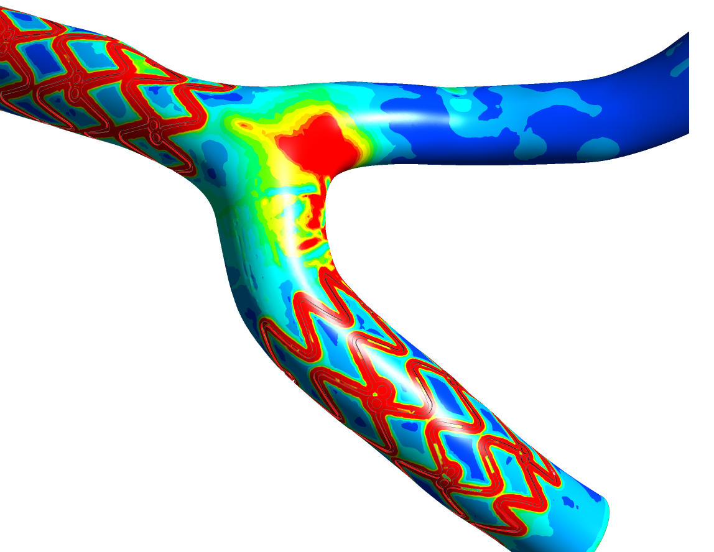
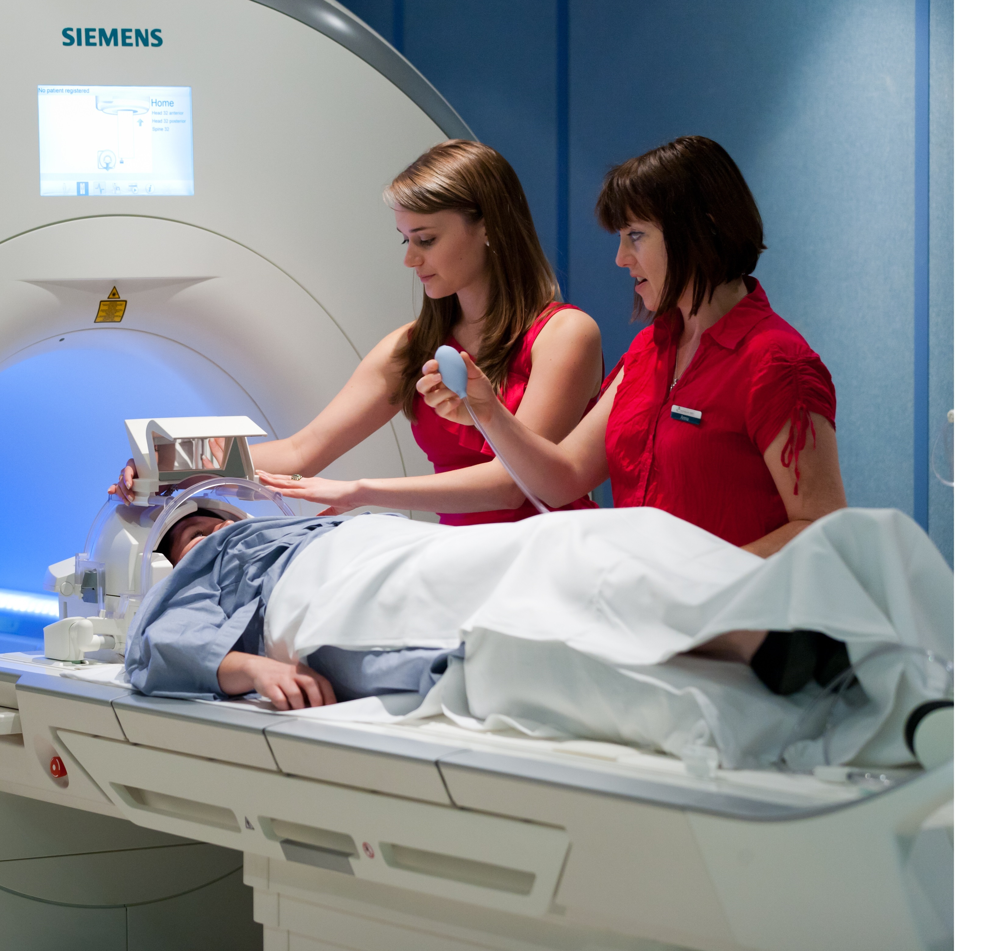
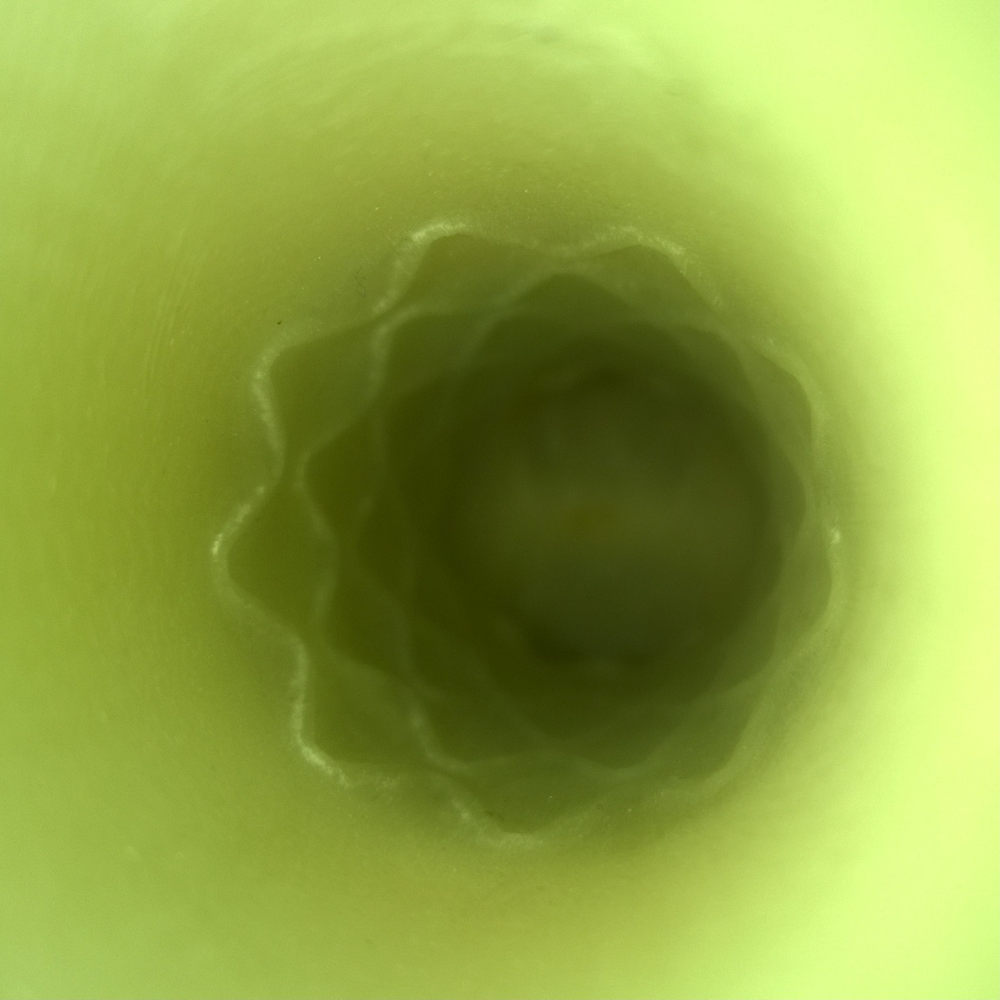

"Whatever you can do, or dream you can, begin it. Boldness has genius, power and magic in it."
- Johann Wolfgang von Goethe
My research interests are in the areas of computational fluid dynamics, image analysis and machine learning applied to biomedical engineering research fields. One example is the creation of a statistical atlas of coronary flow for disease prediction, risk assessment and treatment advances. A second area of interest is the combination of experimental and computational research areas, such as combination of in vitro 4D flow MRI and computational fluid dynamics. Such methods are important in a variety of application areas, including assessment of stent induced blood flow, effectiveness of stent based drug delivery, and understanding of endothelia cell behaviour.
  